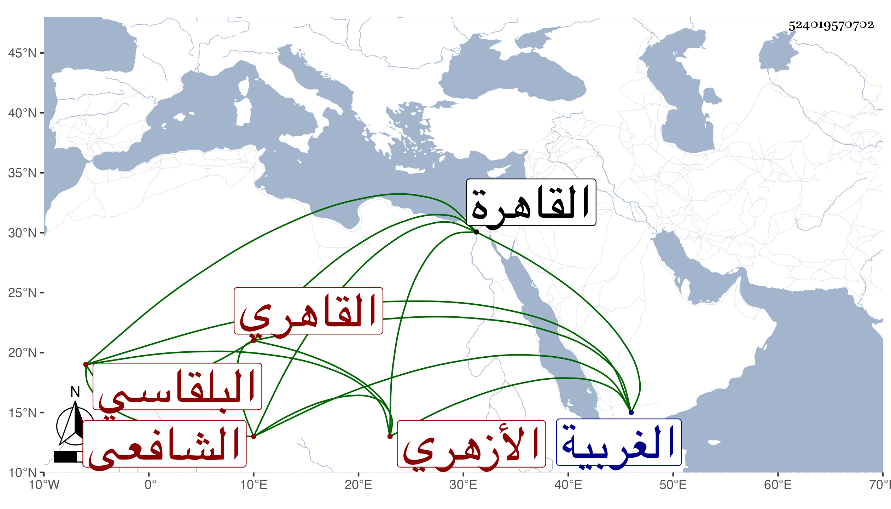

0902Sakhawi.DawLamic.ITO20230111-ara1.EIS1600.524019570702
Biography ID: 524019570702
أحمد بن سليمان بن نصر الله بن إبراهيم الشهاب البلقاسي ثم القاهري الأزهري الشافعي والد سليمان الآتي ويعرف جده إبراهيم بالخطيب وهو بالزواوي لكونه كما سمعته منه كان يجلس في المكتب وحده بالزاوية منه فهو لقب كما كان الشيخ صالح الزواوي يقول في شهرته بها أنه لقب . ولد سنة أربع وعشرين وثمانمائة تقريبا ببلقاس من الغربية وانتقل منها وهو صغير إلى القاهرة فقطن بالأزهر وحفظ القرآن والعقيدة للغزالي ومختصر التبريزي والمنهاج كلاهما في الفقه والمنهاج الأصلي وألفية ابن مالك والعراقي والشاطبية وكذا بلوغ المرام لشيخنا فيما بلغني وغير ذلك وعرض في سنة سبع وثلاثين فما بعدها على خلق منهم شيخنا والقاياتي والشهاب بن المحمرة والعلم البلقيني وابن الديري والأقصرائي وباكير والبساطي والزين عبادة وابن تقي والحناوي وطاهر والمحب بن نصر الله وأقبل بجد على الاشتغال فلازم القاياتي في الفقه والأصلين والعربية والمعاني والبيان وغيرها من الفنون بحيث كان جل انتفاعه به وابن المجدي في الفرائض والحساب والميقات والهيئة والهندسة وغيرهما مما كان يؤخذ عنه والشمس الحجازي في الفقه وغيره أخذ عنه في مختصره للروضة وفي العجالة والونائي والعلم البلقيني لكن يسيرا وكذا اشتدت عنايته في الفنون بملازمة الكافياجي ، وأخذ عن الشمني وابن الهمام ومن لا أحصيه كثرة ، وجمع للعشر على الزين طاهر والشهاب السكندري وللثمان على الزين رضوان المستملي وأكثر التردد إليه حتى قرأ عليه شرح معاني الآثار للطحاوي وأشياء منها قطعة من الحلية لأبي نعيم واغتبط بشيخنا وأخذ عنه الكثير بقراءته وقراءة غيره فكان مما قرأه هو السنن للدارقطني وزوائد ابن حبان على الصحيحين والموجود من صحيح ابن خزيمة وأكثر في الرواية والدراية عمن دب ودرج ورافقنا على ابن الفرات والرشيدي والصالحي والشهاب العقبي ، وسمعت الكثير بقراءته وكذا سمع بقراءتي أشياء بل وأخذ عن جماعة قبلنا كابن بردس وابن ناظر الصاحبة وابن الطحان والزين الزركشي ولا يزال يدأب حتى برع وتقدم في فنون وأشير إليه بالفضيلة التامة وأذن له القاياتي سنة ثمان وأربعين في إقراء الفقه وأصوله والمعاني والبيان والبديع لمن شاء في أي وقت شاء قال لعلمه بتأهله لذلك في آخرين منهم كشيخنا وابن المجدي والزين طاهر ، وتصدى للاشتغال في حياة جل شيوخه فانتفع به الطلبة وربما كتب على الفتوي ، وكان إماما علامة قوي الحافظة حسن الفاهمة مشاركا في فنون طلق اللسان محبا في العلم والمذاكرة والمباحثة غير منفك عن التحصيل بحيث أنه كان يطالع في مشيه ويقرئ القراآت في حال أكله خوفا من ضياع وقته في غيره أعجوبة في هذا المعنى لا أعلم في وقته من يوازيه فيه طارحا للتكلف كثير التواضع مع الفقراء سهما على غيرهم سريع القراءة جدا ، وقد حج مع والده ولم يزل على طريقته في الاشتغال والأشغال حتى مات قبل أن يتكهل في ليلة الجمعة تاسع شوال سنة اثنتين وخمسين ببيته في سويقة السباعين وصلى عليه بالأزهر ودفن بتربة يونس الدوادار المستجدة تجاه تربة برقوق رحمه الله وإيانا ، ولم يسلم من أذى البقاعي حيث وصفه في بعض الأثبات بابن المهتدي وهذا لو صح لم يكن بقادح فيه والله حسيبه .
